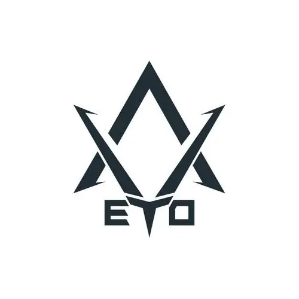
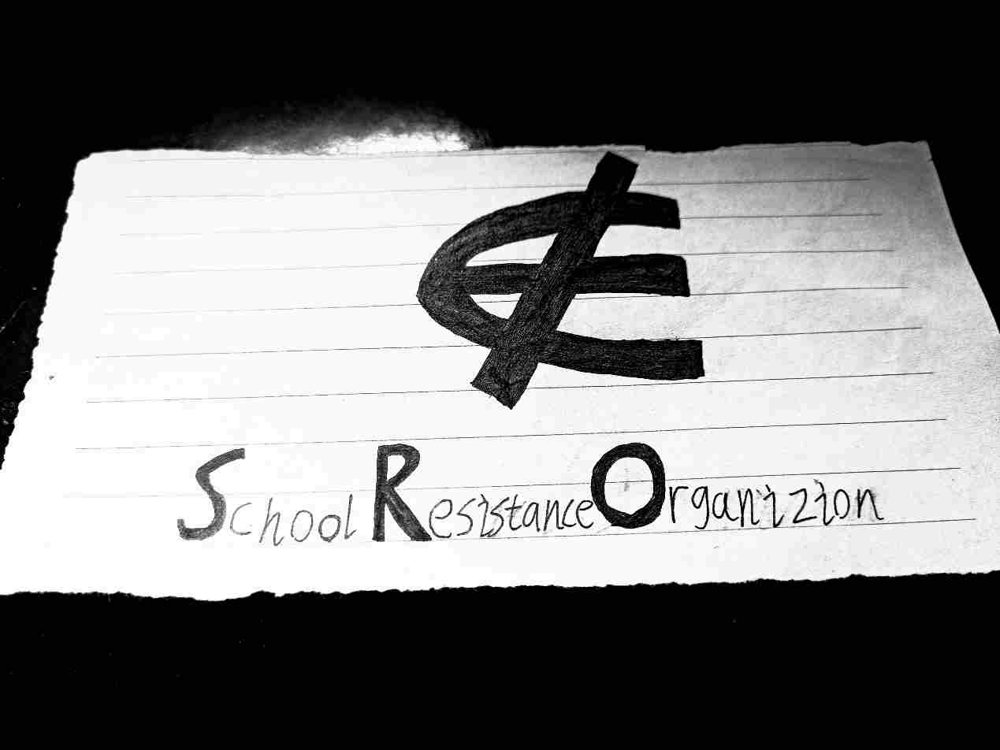
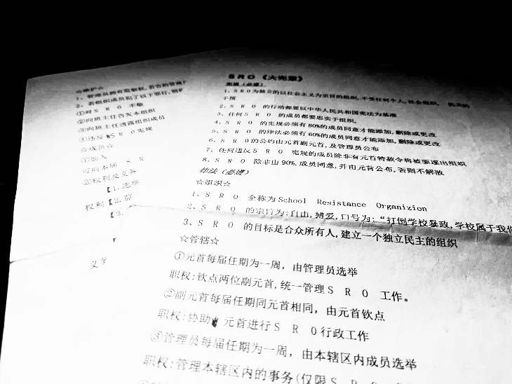
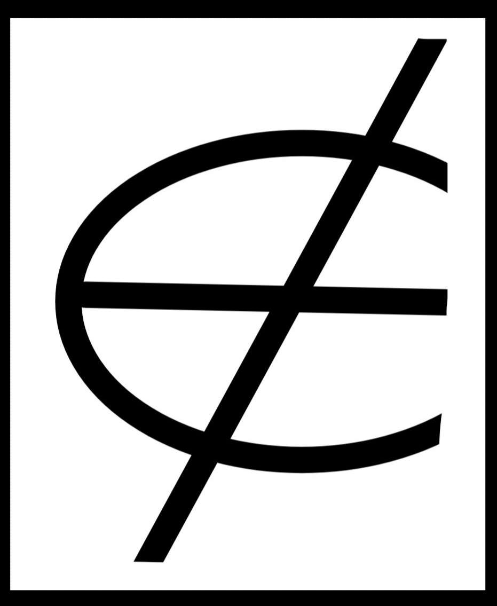
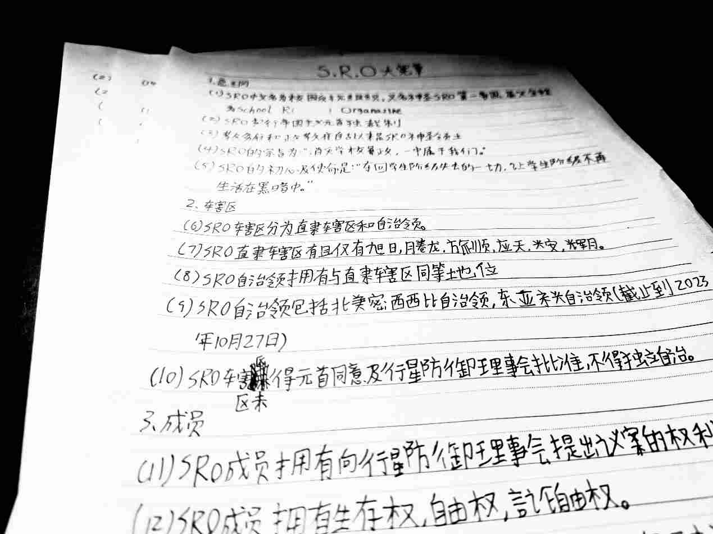
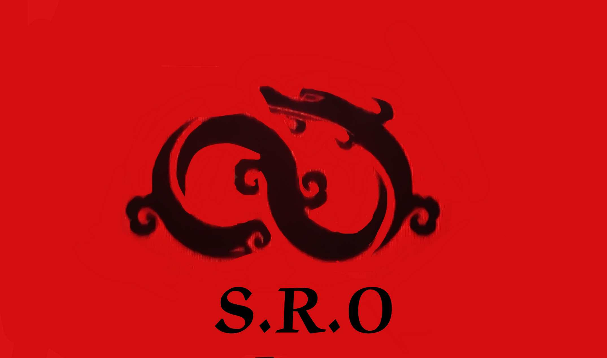

SRO历史
上古时期
SRO的最早灵感来自于小说《三体》中的地球三体组织（ETO）。元首痴迷于《三体》，于是在公元2023年4月，打着ETO的旗号，建立了ETO陆圈一中分部，虽然当时没有成员加入，但这是SRO最早的雏形。
八七时期
公元2023年6月初，元首开启了建立学生阶级政权的第一次伟大尝试，于是，伟大的神圣八七共和国成立了。与之前相比，这次元首不是一个人在战斗，成员人数突破4人大关，这为后来SRO的正式成立积累了宝贵经验。
然而可惜的是，浩浩荡荡的神圣八七共和国在内外反动势力的联合绞杀下宣布解体。
神圣SRO共和国时期
这是载入史册的一天，公元2023年6月13日，神圣SRO共和国成立了。
那天中午，元首正在翻看反邪教的宣传纸，突然得到启发，在查阅了一个午休的英汉词典后，SRO这个名字得到最终确立。
当时，SRO还是民主共和制，元首还是民主选举出来的。但仅仅只是两个星期后，元首宣布称帝，神圣SRO共和国演变为神圣SRO第一帝国。
神圣SRO共和国虽然短暂，却将永远载人SRO的史册，6月13日也被定为SRO的国庆日。
SRO成立的标志物
神圣SRO共和国《大宪章》
神圣SRO共和国临时国旗
神圣SRO第一帝国时期
元首称帝后，SRO进入第一帝国时期。
在第一帝国时期，SRO成员飞速增长，达到了68人。同时，SRO也确立了新的《大宪章》（见下图）。同时SRO也拥有了一名外省成员和两名美国成员（游戏内认识）。这一时期，SRO本土遍布陆圈一中六个班，自治区跨过黄河，跨过了辽阔的太平洋，SRO进入了"黄金时代"。
快乐的时光总是短暂的，随着毕业，神圣SRO第一帝国也于2024年6月15日分崩离析。
神圣SRO第一帝国国旗
神圣SRO第二帝国时期
神圣SRO第一帝国解体后，元首从未放弃SRO，于是2024年6月20日，神圣SRO第二帝国在第一帝国的废墟是浴火重生了
现在，SRO的成员已经分散，但我们坚持"一个SRO"原则，将东明一中定为新的本土，同时其他自治区保持高度自治!只有我们心中有信仰，我们伟大的帝国必将复兴!
神圣SRO第二帝国国旗